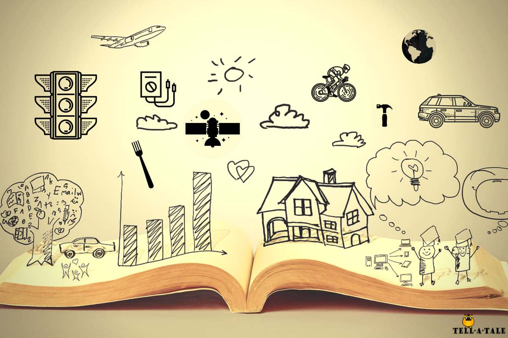
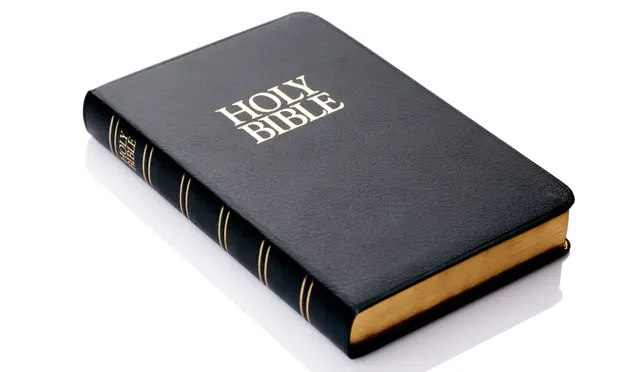
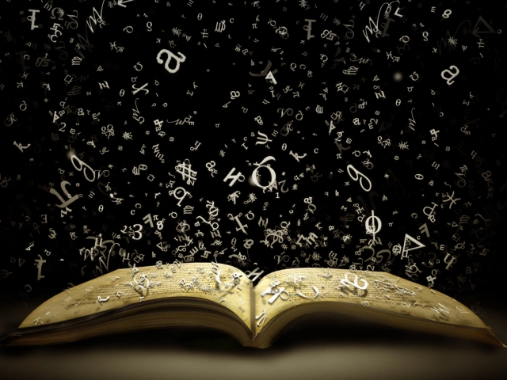
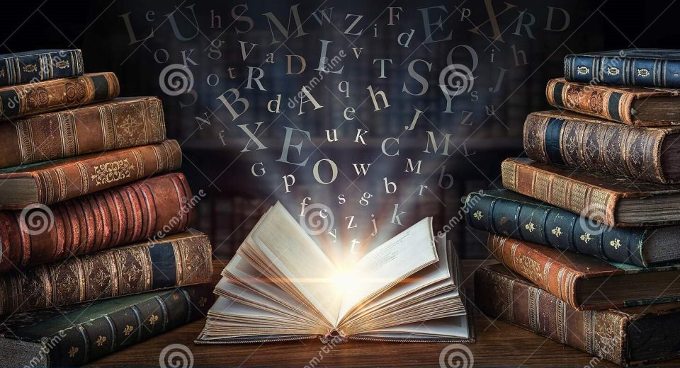
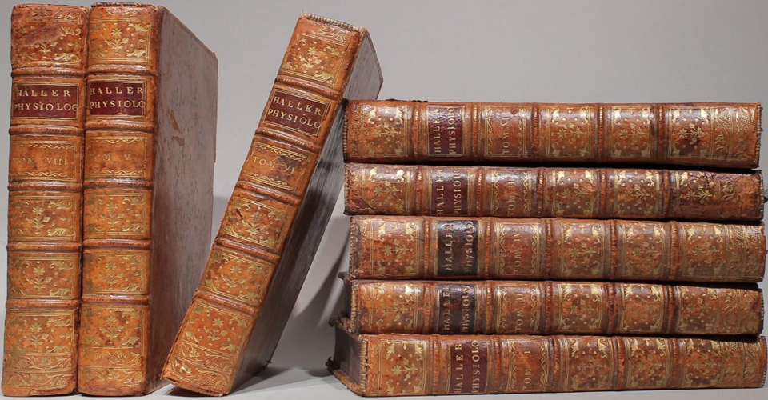

Do you want to learn about books? Well you've come to the right place! Check out these 10 facts about books...
Books have been around for centuries, and over the years, they have become some of the most beloved and influential works of literature. From classic novels to children’s books, books have had a profound effect on our lives. Here are the top 10 facts about books. From the most popular book to the oldest book, these facts will provide an interesting insight into the world of books.
1. There are around 130 million published books.
Have you ever wondered how many books have been published?
Although it’s impossible for us to come up with an exact number, according to Google, they believe it is around 130 million books!
All those books definitely won’t be fitting on the book shelf.

2. The most sold book is the Bible.
The Bible is sold all over the world, which makes it the most sold book there is!
At an estimate, there are 5 billion printed copies of it around the world.
Wow!

3. The longest book in the world is ‘Remembrance of Things Past’.
According to Guinness World Records, ‘Remembrance of Things Past’ is the longest book in the world.
It has 9,609,000 characters, including spaces.
It was written by Marcel Proust who was from France, in 1912.

4. The most expensive book in the world is ‘the Codex Leicester’.
The Codex Leicester is the most expensive book in the world.You’re not going to believe how much it sold for…
The science book sold for 30.8 million dollars in 1994.
It was Leonardo da Vinci’s science diary!

5. The first ever story written was ‘The Epic of Gilgamesh’.
It is believed that the first ever book written was ‘The Epic of Gilgamesh’.
The story was written in 2100 BCE in the cuneiform script, which is one of the oldest forms of writing.

6. The largest collection consists of 1.5 million books!
According to the Guinness World Records, the largest privately owned collection of books is a massive 1.5 million.
They are owned by John Q. Benham who lives in Indiana in the USA.
He has to keep them in lots of different places because he doesn’t have enough space in his house.
They are in the garage, in his two-storey building and even outside!

7. If you read 20 minutes a day, you would have read 1.8 million words in a year.
All it takes is 20 minutes a day.
If you read for this long every day for a year, then you would have read 1.8 million words.
You will be like a human dictionary!

8. You can read books in lots of different ways including e-books and audiobooks!
There used to be a time where we only had books to read.
Lucky for us, we can access them in lots of different ways now.
Whether it’s online, an e-book or even an audiobook there are lots of ways to access your favourite stories.
9. The person who draws pictures in books is called an illustrator.
Take a look at your books and they will say “Illustrated by…”.
The illustrator is the person who draws all the pictures in the book.
Books don’t always have to have one illustrator, there can be multiple.
If you love art then you might like to work as an illustrator when you are older!
10. Johannes Gutenberg invented the printing press.
We need to thank Johannes Gutenberg for the books we have today.
He invented the printing press, which prints words on to paper.
This was in 1440.
It meant that thousands of books could be produced very quickly!